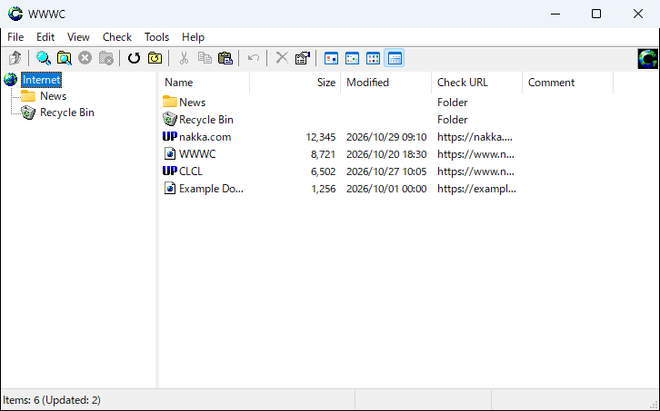
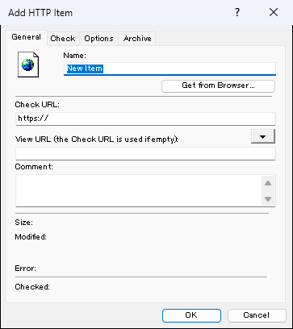
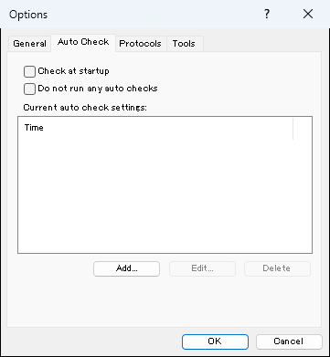
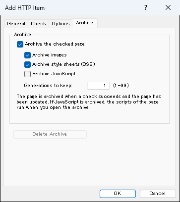

Register the URLs of the web pages you visit often, and WWWC notifies you when they are updated. Checked pages are saved as archives, so you can see the previous content even after a page is gone.
Select "File" - "New" - "Add HTTP Item..." and enter the URL of the page to check. You can also get the page shown in a browser, or add items by drag and drop.
Check for updates
Select "Check" - "Check All Items" (Ctrl+F5). Updated items are shown with the "UP" icon and listed in the update message. Set the auto check to check periodically.
Open pages and archives
Double-click an item to open the page in the browser. The pages saved at check time can be opened at any time with "Open Archive" in the right-click menu.
Introduction
What is WWWC?
WWWC is a web page update checker for Windows.
Register the URLs of the web pages you visit often, and WWWC notifies you when the pages are updated.
WWWC checks all the registered URLs while keeping up to 30 checks running at the same time. This is much faster than visiting each page with a browser to see whether it has been updated.
WWWC is used in the same way as Explorer, the file manager that comes with Windows.
WWWC is free software. You may distribute it freely without permission.

The main window: folders on the left, items on the right. Updated items have the "UP" icon.
Uses
Register web pages that publish information and check them for updates.
Register the web pages of the software you use and check whether new versions have been released.
Features
Checks automatically at specified times or at specified intervals.
Archives the checked pages so that you can see the previous content later.
Supports pages that require authentication.
Can check through a proxy, including proxy authentication.
Can use HTML META tags to handle update information other than the modified date and the size.
Exchanges URLs with Explorer and browsers by drag and drop.
Supports various protocols by adding protocol DLLs.
Can be extended by adding plug-in DLLs and tools.
Installation
WWWC runs on Windows 7, 8, 8.1, 10 and 11.
Run the installer (wwwcversion.exe), choose the destination folder and where to create shortcuts, and install.
The installer runs as administrator. The default destination is the "WWWC" folder under "Program Files".
The settings and the items are saved in "%LOCALAPPDATA%\WWWC" (usually C:\Users\user name\AppData\Local\WWWC).
When WWWC starts for the first time, a folder with your user name is created in this folder, and the settings of each user are saved there.
To uninstall WWWC, use "Programs and Features" in the Control Panel ("Apps" in Settings). The uninstaller asks whether to delete the settings and the items.
WWWC is displayed in English if the display language of Windows is not Japanese.
WWWC requires an Internet connection.
Creating Items
Creating from the Menu
Select "File" - "New" in the WWWC menu to create a new folder or a new item of each protocol.
Press Ctrl+N to show the "New" menu.

"Add HTTP Item": enter the name and the Check URL. "Get from Browser..." gets the page shown in a browser.
Adding by Drag and Drop
Drag and drop a file onto the WWWC window to create an item from the file.
For example, if you drag and drop a file with the .URL extension onto WWWC, an HTTP item is created.
If you drag and drop a folder, the items are added together with the folder structure.
You can also create items by copying files or URLs to the clipboard and selecting "Paste" in WWWC.
Checking
Checking ItemsKey feature
Select items and choose "Check" from the right-click menu to check the selected items for updates.
You can also check from the toolbar or from the "Check" menu of the window.
If no items are selected, all the items in the current folder are checked.
If a folder is selected, the items in the folder are checked.
However, the folders below it are not checked. To check them as well, select "Check with Subfolders".
When you check with "Check", the items and folders set to "Do Not Check" are also checked.
Checking All Items
Select "Check All Items" in the "Check" menu of the window to check all the items registered in WWWC.
Select "Check Error Items Only" to find the items with errors or timeouts among all the registered items and check them again.
When you check with "Check All Items", "Check with Subfolders" or "Check Error Items Only", the items and folders set to "Do Not Check" are not checked.
Update Message
When a check finishes, the update message is displayed.
The update message lists the items whose icons have changed to the updated icon ("UP") in this check.
Double-click an item in the update message or in the main window to open the item. For example, the URL of an HTTP item is opened in the browser.
When you open an item, its icon is reset automatically.
To reset the icons without opening the items, select the items and choose "Reset Icon".
Settings
General
Select "Options..." in the "View" menu of the window to open the options.
The "General" tab contains the general settings of WWWC.
If you turn on "Share the items and settings among all users", you can use WWWC with the same settings even if you sign in to Windows with a different user name.
WWWC manages the items and the settings by the user name you use to sign in to Windows, so a different user name means different settings.
Turn on this setting to use the same settings with different user names.
"Number of items checked at a time" is the number of items checked at the same time.
When the check of an item finishes, the check of the next item starts, so the number of running checks is always kept at this number.
If you turn on "Show an icon in the task tray", an icon is shown in the task tray (notification area), and the window disappears from the taskbar when it is minimized.
If you turn on "Do not show the window at startup", the window is not shown at startup and only the icon in the task tray is shown.
In "When Items Are Updated", if you turn on "Show a message", the update message is displayed when a check finishes and there are updated items.
If you turn on "Play a sound", a sound is played when a check finishes and there are updated items. You can also choose the sound to play.
For more detailed display and behavior settings, edit "user.ini" in the user folder (the folder with the name of the user signed in to Windows) in the folder where the settings are saved (%LOCALAPPDATA%\WWWC).
See "ini_sample.txt" (Japanese) for the settings. Exit WWWC before you edit the file.
Auto Check
On the "Auto Check" tab, you set the times when checks are run automatically.
Click "Add..." to add a new setting. You can register multiple settings.
At a registered time, WWWC runs "Check All Items".
If you turn on "Check at startup", WWWC checks all the items when it starts.

"Auto Check": register the times or intervals at which all items are checked.
The folder properties also have the same "Auto Check" settings.
If you set the auto check of a folder, the auto check settings of the options do not apply to the folder, and the folder is checked automatically on its own.
The auto check settings of the options cannot use intervals in minutes. To check every few minutes, for example to check mail, use the auto check settings of a folder, which can use intervals in minutes.
Short auto check intervals put load on the servers. Use long intervals and do not check more often than necessary.
Protocols
On the "Protocols" tab, you set the protocols that WWWC checks.
Click "Add..." and select a DLL to add a protocol.
Click "Edit..." to edit the protocol information, such as the icons of each protocol.
Click "Properties" to set the settings of each protocol. For example, select the HTTP protocol and click "Properties" to set the proxy.
Tools
On the "Tools" tab, you can register programs and plug-ins that extend WWWC.
Click "Add..." to open the tool settings.
If you select a DLL as the file name in the tool settings, it is registered as a plug-in.
If you select an EXE file or a file with another extension, the file is run according to the run options.
The command line in the tool settings can contain two kinds of information: information of each item (1 to 8) and information of the whole of WWWC (9 to 12).
The information of each item is available only when "Show in the item menu" is turned on and the tool is run from the item menu.
To run a tool for each item from somewhere other than the item menu, create a plug-in.
Click "Properties" to set the settings of each plug-in. Tools that are not plug-ins have no properties.
If you drag and drop a DLL onto WWWC, you can register the protocols and tools in the DLL at once.
HTTP
Check Method
HTTP (URLs that start with "http://" or "https://") can be checked by default.
To check an HTTP item, WWWC usually sends a "HEAD" request, which gets only the header, and gets the update information from the header returned by the server.
However, some web pages are created dynamically by CGI, SSI and so on, and the update information cannot be obtained.
In this case, WWWC sends a "GET" request, which gets the whole page, and checks for updates by the size of the page.
Checking pages that are created dynamically by CGI, SSI and so on puts load on the servers. If you do not need to check them, set them to "Do Not Check".
If you need to check such a page but the size changes every time, create "filter.txt" in the folder where the settings are saved (%LOCALAPPDATA%\WWWC) with reference to "filter_sample.txt" (Japanese).
You can remove the parts of the page that change every time, or extract the part with new information, to check the page reliably.
"Check by modified date"
Effective when the modified date can be obtained. If it cannot be obtained, this setting is ignored automatically.
"Check by size"
If the size can be obtained from the header, the item is checked by that size.
If it cannot be obtained from the header, if "Check by the size without HTML tags" is turned on, or if a filter is applied, the item is checked by the size of the page.
"Check by changes in the full content (MD5)"
The item is checked by the MD5 digest of the received HTML. This is not done if the modified date is obtained and the page has not been updated.
You can check specific parts of a page by combining this with filters.
"Check with a META tag"
If a WWWC META tag is embedded in a web page and this setting is turned on,
the item is checked by the content written in the META tag, and the content is displayed as the modified date.
You can customize the setting to check the update information of META tags other than the WWWC one.
If the page to check requires user authentication, open the "Options" tab of the item properties, turn on "This URL requires user authentication", and set the user and the password.
The supported authentication method is BASIC authentication (BASE64).
With "User-Agent" on the "Options" tab of the item properties, you can set the User-Agent sent when the item is checked and archived. If it is empty, the User-Agent of WWWC is sent. Characters other than single-byte letters, digits and symbols are removed.
Proxy Settings
To open the HTTP settings, select "HTTP" in the protocol list on the "Protocols" tab of the options and click "Properties".
In the HTTP settings, you can set the proxy used for HTTP.
Automatic proxy configuration (such as "http://hoge/hoge.pac") is not supported.
Specify the name of the proxy server directly.
Web servers in your LAN may need to be checked without a proxy.
In this case, open the "Options" tab of the item properties and turn on "Do not use a proxy".
You can also set an item to use a proxy other than the protocol settings in the item properties.
Menu
Right-click an HTTP item to show the menu specific to HTTP items.
"Open Archive"
Opens the page saved when it was checked (archive) in the browser.
You can see the previous content, for example, when the page has been removed. This cannot be selected if there is no archive.
"View Header"
Shows the response header of the URL registered in the item.
The item is checked by the "Last-Modified:" field shown here.
If "Last-Modified:" is not included, the item is checked by the size of the HTML.
"View Source"
Receives the HTML from the URL registered in the item and shows it. The character encoding is converted automatically.
If you select "View Source" while holding down the Shift key, the source with the filters applied is shown, and "(Filtered)" is shown in the title bar.
"Get Title"
Receives the HTML from the URL registered in the item and sets the text enclosed in <TITLE> and </TITLE> as the name of the item.
You can add tools and plug-ins to the item menu by registering them on the "Tools" tab of the options.
ArchiveKey feature
When a page is checked successfully and has been updated (or has no archive yet), WWWC saves the page in the "user name.archive" folder in the same location as the user folder.
Select "Open Archive" in the item menu to open the saved page.
On the "Archive" tab of the item properties, you can set whether to archive the page, whether to save images, style sheets (CSS) and JavaScript, and the number of generations to keep.
By default, the page is archived, images and CSS are saved, JavaScript is not saved, and one generation (the latest only) is kept.
Click "Delete Archive" on the same tab to delete the archive of the item.

"Archive" tab of the item properties: choose what to save and how many generations to keep.
Pages that require authentication are not archived. If authentication (a user name and a password) is set for an item, or if the URL contains a user name, the item is not archived.
If you change the settings for images, style sheets or JavaScript, WWWC asks whether to delete the existing archive. If you delete it, an archive with the new settings is created at the next check.
If JavaScript is not saved, the scripts and event attributes in the page are removed when the page is saved, so that no scripts run when you open the archive. Scripts do not run in embedded pages (iframes) either.
Images are downloaded again only if they have changed since the last time. If you keep two or more generations, a list of the saved dates and times is shown when you open the archive.
To stop archiving for all items, select "View" - "Options..." - "Protocols", open the HTTP settings, and turn off "Use archives" on the "Archive" tab.
Opening in a Browser
Double-click an item to open the URL set in the item in the browser.
If a browser is already running, the URL is opened in that browser.
If you drag and drop an item onto a browser, the URL of the item is passed to that browser.
If the View URL is set, the page is opened with that URL. If the View URL is not set, the page is opened with the Check URL.
To open URLs in a new browser window, register a tool in the options.
Click "Add..." on the "Tools" tab of the options and specify the location of Chrome, Firefox and so on
Set the title to something like "Open in New Browser"
Enter %u in the command line (for Chrome, enter "--new-window %u"; for Firefox, enter "-new-window %u")
In the run options, turn on "Show in the item menu" and enter http in "Protocols to apply to"
To reset the icon when the tool is run, turn on "Reset the icon after running" in the run options
Click [OK] to finish
With these settings, [Open in New Browser] is added to the menu.
To make this action the action when an item is double-clicked, turn on "Run when an item is double-clicked" in the tool settings.
Others
Command Line
You can specify what WWWC does after it starts with the command line.
/nDo not exit after the first check if there are updates
/aDo not activate WWWC that is already running
/d:Specify the working folder
/u:Specify the user name
If starting two instances is prevented without a message, /c /i /s /e /n and the files are passed to WWWC that is already running.
You can pass Item.dat, URLs, files of each protocol (for example, Internet shortcuts) and folders that contain them as the files. WWWC detects the kind of each file automatically and creates items.
If files are specified, a window to select the folder to add the items to is shown after WWWC starts.
If a plug-in DLL is specified as a file, a window to select the plug-ins to add is shown.
/n is effective only when /e is specified.
Support
The latest information, support information and tools are available on the WWWC website.
The author takes no responsibility for any damage caused by this program. It is strongly recommended to back up important files.